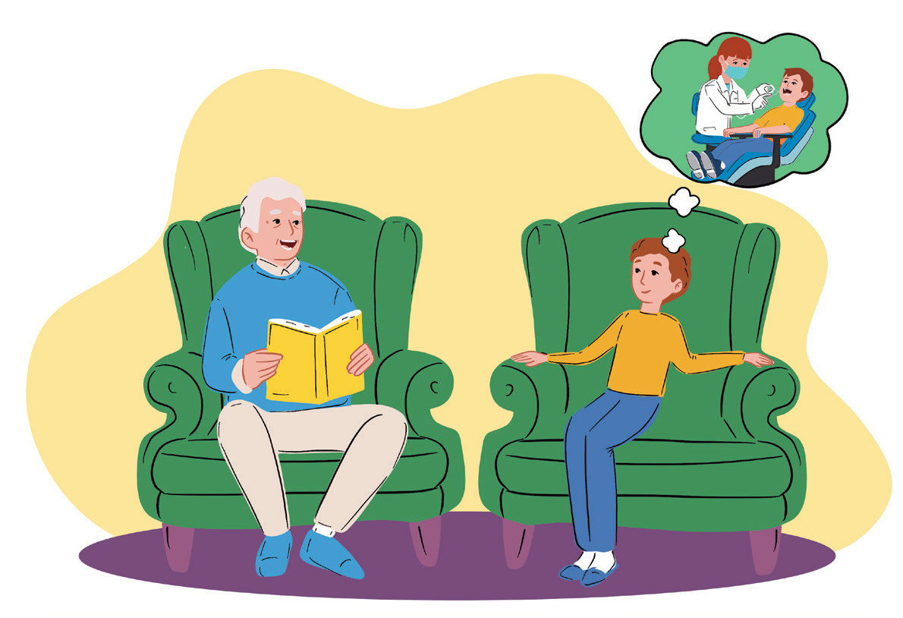

Jeta në Kosovë dikur dhe sot
Njerëzit që nuk harrohen
Situata 2.
Mali shkon rregullisht te dentisti. Shumë i pëlqen kur i sheh gjithë ato mjete, me të cilat ndreqen dhëmbët. Edhe butësia e dentistit ka bërë që Mali të kujdeset për shëndetin e dhëmbëve me shumë dëshirë.
Një ditë, ai e pyeti gjyshin:
- Gjysh, si ka qenë mjekësia në kohën tënde?
- Në kohën time, - tha gjyshi, - nuk kishte shumë mjekë. Mjekët duhej të shkolloheshin në vende të tjera, sepse te ne nuk kishte shkolla. Ata ishin shumë të kujdesshëm dhe shëronin shumë njerëz, edhe pse nuk kishin mjetet që janë sot. E sot ka shumë mjekë për të cilët duhet të flasim me respekt, pasi me punën dhe kujdesin që tregojnë, janë gjithmonë në shërbim të popullit.
Gjithmonë, gjyshi është i gatshëm ta shuajë kureshtjen e Malit për pyetjet që i bën.
